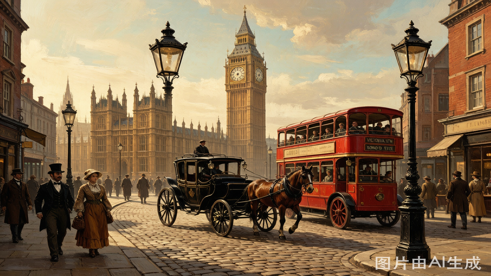

大本钟像素艺术 - Godot 集成
已集成到 Godot 项目的像素艺术风格大本钟
✓ 已成功集成
大本钟像素艺术资源已添加到 Godot 项目，可直接在场景中使用
透明底版本
文件：bigben_pixel.png |
尺寸：2048×2048 RGBA |
风格：64x64 像素艺术
伦敦背景融合效果

位置：背景右侧 |
推荐缩放：0.3 - 0.5 |
用途：场景背景元素
Godot 使用方式
# 动态加载大本钟
var bigben_scene = preload("res://assets/props/bigben.tscn")
var bigben = bigben_scene.instantiate()
add_child(bigben)
bigben.position = Vector2(1600, 400) // 背景位置
bigben.scale = Vector2(0.4, 0.4) // 缩放
场景文件：res://assets/props/bigben.tscn
资源路径：res://assets/props/bigben_pixel.png
碰撞体：200×400 矩形
资源路径：res://assets/props/bigben_pixel.png
碰撞体：200×400 矩形